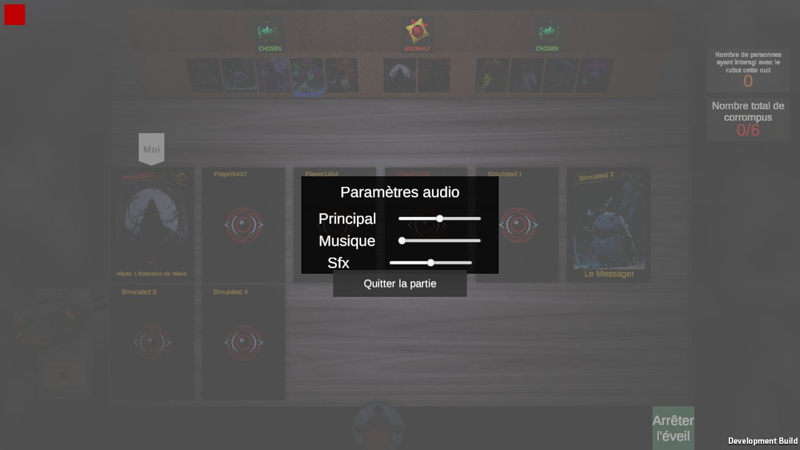

Le vocal Steam marche (PR #142) : tu maintiens V pour parler ; le jour tout le monde t'entend, la nuit
seulement les autres anomalies, ou ton correspondant si tu es le messager. Pour l'instant rien ne s'affiche :
on ne sait ni qui parle, ni si son propre micro est ouvert. Tu as aussi demandé de pouvoir choisir entre la
touche V et un micro toujours ouvert.
Images : vraies captures du jeu (vue du jour au vote, nuit vue de dessus, menu pause). Les lueurs sont dessinées
ici ; en jeu ce serait une vraie lumière ou un shader sur la carte. La couleur chaude est provisoire (celle des
lampes de la table), à toi de la régler.
Qui parle
Le jour, assis à la table. Celui qui parle est le chat en face de toi (sa carte : Autoplayclient1). La lueur suit
le volume de sa voix.
A1Sa carte s'éclaire
Le bord de la carte de celui qui parle s'allume au rythme de sa voix. Marche pour tout le monde,
même les chats derrière toi, et de nuit vue de dessus (les cartes sont toujours là).
A2Son chat s'éclaire
La lumière au-dessus de son chat (celle de T11) monte quand il parle. Très « dans la pièce », mais on
ne voit que les chats devant soi : il faut tourner la tête vers une voix, et la nuit vue de dessus, rien ne
se voit.
A3Les deux
Son chat s'éclaire quand on le regarde, sa carte aussi pour ceux qu'on ne voit pas.
La nuit, entre anomalies
Ton tour de nuit, vue de dessus. Ton partenaire anomalie (Simulated 1, carte révélée) te parle. Seuls les chats
ne se voient pas d'ici.
N1Sa carte s'éclaire, comme le jour
Même signe que A1 : on sait lequel des complices parle.
N2Rien la nuit
Les anomalies se reconnaissent à la voix ; l'écran de nuit reste comme aujourd'hui.
Mon micro est ouvert
Cette fois c'est toi qui parles (tu maintiens V pendant les moments 2 et 3). Ta carte est la première à gauche,
sous l'onglet « Moi ».
B1L'onglet « Moi » s'allume
L'onglet déjà posé au-dessus de ta carte devient blanc et lumineux tant que ton micro est ouvert.
Rien de nouveau à l'écran, juste un objet qui existe déjà.
Moi
B2Ta carte s'éclaire, comme celle des autres
Le même signe que pour les autres (A1), sur ta propre carte : tu vois exactement ce que les autres
voient quand tu parles.
B3Rien à l'écran, un petit son
Un léger clic quand le micro s'ouvre et un autre quand il se ferme (comme une radio), rien de
visible. Avec le micro toujours ouvert, il n'y aurait aucun repère.
Le réglage : touche V ou micro ouvert
Dans le menu pause, panneau « Paramètres audio » (redessiné ici à l'identique, avec une ligne de plus). Touche les
réglages, ils réagissent. Avec le micro ouvert, Steam coupe tout seul quand tu te tais.
C1Une ligne qui défile
« Micro » et son mode ; un clic passe à l'autre. Une seule ligne, même allure que les curseurs.

Paramètres audio
Principal
Musique
Sfx
Voix
Micro‹Maintenir V›
Quitter la partie
C2Une case à cocher
« Micro toujours ouvert », décochée par défaut (= maintenir V). Comme les cases « Essais » déjà dans
le menu pause.
Paramètres audio
Principal
Musique
Sfx
Voix
Micro toujours ouvert
Sinon : maintenir V pour parler.
Quitter la partie
C3Les deux choix visibles
Les deux modes écrits l'un sous l'autre, on coche celui qu'on veut : on voit tout de suite qu'il y a
un choix, et lequel est pris.
Paramètres audio
Principal
Musique
Sfx
Voix
Micro
Quitter la partie
Le volume des voix
Les cadres ci-dessus ont une ligne « Voix » (le volume des autres joueurs, à part de la musique et des effets).
D1Garder « Voix »
Un curseur de plus ; utile si un ami parle trop fort par rapport aux sons du jeu.
D2Pas de curseur
Les voix suivent « Principal », le panneau reste à trois curseurs.